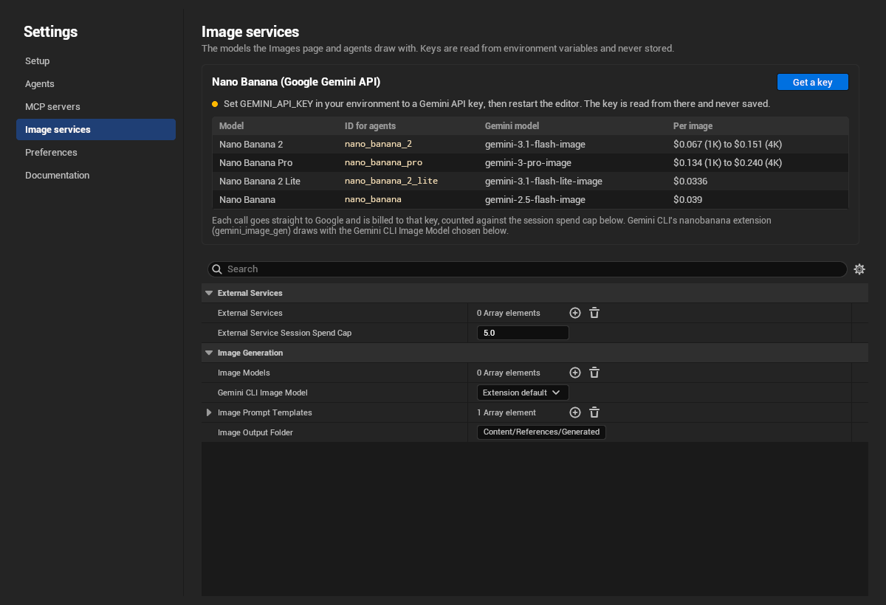

What you need.
| What | Why | Notes |
|---|---|---|
| Windows 10 or 11, 64-bit | HyperAI Studio is a Win64 editor plugin. | It never ships in a packaged game. |
| Unreal Engine 5.8 | It is built for Epic's Unreal MCP in 5.8. | Blueprint and C++ projects both work. |
| At least one agent CLI | The agents do the work; HyperAI hosts and supervises them. | Claude Code, Codex or Gemini CLI, each signed in to its own account. Setup can install them. |
| Node.js 20+ and npm | Gemini CLI and community MCP servers run on Node. | Only needed for Gemini or extra servers. Git is recommended for everything. |
| Visual Studio 2022 with C++ | Only to build the plugin or your project's C++ from source. | Agents that change C++ rebuild through hyper_editor_restart. |
The Unreal plugins HyperAI relies on switch on with it: ModelContextProtocol (Unreal MCP), ToolsetRegistry, EditorToolset, MCPClientToolset, Terminal, FileSandbox and PythonScriptPlugin. Packs for Niagara, PCG, GAS, Enhanced Input, MetaSounds and the rest light up when your project enables those plugins.
Install the plugin.
- Get HyperAI Studio.From Fab in the Epic Games Launcher, install it to Unreal Engine 5.8; or copy the plugin folder into your project's
Plugins/folder. - Enable it.Open your project, go to Edit › Plugins, find HyperAIStudio under AI, tick it, and restart the editor when asked.
- Open the Studio.Press Ctrl+Alt+H, choose Tools › HyperAI Studio, or click the HyperAI button in the status bar. Every feature is a page in this one window; Ctrl+K searches pages and actions.
- Read these guides there.The Docs page, the ? in the Studio's header, and the Documentation action show these pages inside the editor, from the plugin's
Docsfolder. Links to websites open in your browser, and so does Open in browser, for printing; an editor without Unreal's web browser opens the guides there instead.
One button: Start Setup.
Open Settings › Setup and press Start Setup. It does, in order:
- Configure Unreal MCP.It sets up Epic's server and enables the Unreal plugins HyperAI needs. If it enabled any, restart the editor when it asks, then press Start Setup again.
- Start the server.Unreal MCP listens at
http://127.0.0.1:8000/mcp. Change the port under Preferences › Unreal MCP if 8000 is taken. - Sync Epic's toolsets.Agents then see every Unreal tool; the row shows how many are active.
- Write the agent files.Instructions, MCP configs, skills and helper scripts, all listed below.
Then press Verify. Each row turns green when it is ready: Epic MCP toolsets, Unreal MCP server, the tools/list probe (a real MCP handshake), Agent instructions and configs, and Agents usable. A row that is not ready says why and offers the fix.

Every agent from this one click. Claude Code, Codex, Gemini, Cursor and VS Code get their MCP config files; the agents that join through the Agent Client Protocol are handed Unreal MCP with each chat. Two things that used to need a step of your own are done for you: Codex reads a project’s .codex/config.toml only once you trust the project, so HyperAI also gives Codex Unreal MCP on its command line (-c mcp_servers.unreal-mcp.url=…); and an interactive Claude Code session asks before it uses a server from .mcp.json, so HyperAI starts it with a settings file that approves unreal-mcp alone (.hyperai/runtime/claude-launch-settings.json). Signing in to each agent stays yours, or give it a key in Your own keys.
Setup never restarts the editor on its own. When it enables a plugin, it tells you, and picks up where it stopped after you restart.
Add an agent.
Open Settings › Agents. Codex is on by default; turn on the others you use. For each one HyperAI shows whether its CLI is installed, and an Install button runs the official installer in a visible terminal:
| Agent | Install command HyperAI runs | Then |
|---|---|---|
| Claude Code | powershell -ExecutionPolicy Bypass -Command "irm https://claude.ai/install.ps1 | iex" | Run claude once and sign in with your Anthropic account. |
| Codex | powershell -ExecutionPolicy Bypass -Command "irm https://chatgpt.com/codex/install.ps1 | iex" | Run codex once and sign in with ChatGPT or an API key. |
| Gemini CLI | npm install -g @google/gemini-cli | Needs Node.js 20+. Run gemini once and sign in with Google. |
| Cursor | winget install -e --id Anysphere.Cursor | An editor agent: HyperAI writes its MCP config; you work in Cursor. |
| VS Code + Copilot | winget install -e --id Microsoft.VisualStudioCode | Copilot's agent mode reads the MCP config HyperAI writes. |
If an agent still shows Missing after installing, restart the editor so it sees the new PATH. More agents join the chat through the Agent Client Protocol as soon as their command is installed: GitHub Copilot (copilot), Cursor Agent (cursor-agent), OpenCode, Goose, Qwen Code (qwen), Kimi, Cline and Auggie. HyperAI hands each of their chats Unreal MCP, so they need no settings file; sign in once in the agent's own terminal (switch the tab to the terminal view). Pick your preferred agent on the same page (Codex until you change it): it takes chats nobody routed and every Match job.
Agents run on their own accounts. What they do counts against your Claude, ChatGPT or Google plan, exactly as it would in a terminal. A model served on this computer costs nothing.
What setup writes.
Everything goes where each agent expects it, at the project root. Configs are written only for agents you turned on; existing JSON configs are merged, and a malformed one is left untouched with a message instead.
| Path | For | What it is |
|---|---|---|
AGENTS.md | Every agent | Project instructions: how to reach Unreal, fast paths, replies, domain guides, and the Project Memory block. Only HyperAI's marked block is rewritten; your own text stays. |
CLAUDE.md | Claude Code | A thin file that imports AGENTS.md. |
.mcp.json · .codex/config.toml · .gemini/settings.json · .cursor/mcp.json · .vscode/mcp.json | Each client | The unreal-mcp server entry, plus any extra servers you added. In Codex's TOML only a delimited block is managed. |
.agents/skills/ → .claude/skills/ | Codex, Claude Code | Project skills, HyperAI's built-in ones among them, mirrored for Claude Code. |
.hyperai/agents/ → .claude/agents/, .codex/agents/ | Claude Code, Codex | When you add the team: its six subagents, defined once and written for both. |
.claude/workflows/ | Claude Code | When you add the team: hyperai-team, hyperai-match and hyperai-verify. |
.hyperai/scripts/ | Agents, you | Start-HyperAIStudioEditor.ps1 starts or reconnects the editor; Wait-HyperAIStudioMCP.ps1 waits for MCP and checks tools/list. |
.hyperai/docs/ | Agents | The tool guide listing every toolset, tool and field, and cookbooks for animation, UAF and images. |
.hyperai/memory/ | Everyone, via Git | Project memory: one file per note, and an index. |
.hyperai/work/ | Everyone, via Git | Agents' work folders for substantial tasks: plans, decisions and logs. |
.hyperai/runtime/ | This machine | Git-ignored: the operation journal, task history, recent changes and status. agent-host/ holds the background host’s chats (their agents’ output and what was sent to them), readable by your Windows user alone; see Long jobs. |
Commit everything except .hyperai/runtime/, which is Git-ignored: it is this machine's working state.
Keys and image services.
HyperAI never writes a key into the project, an ini file, a log or Activity. A key lives in one of two places: Windows Credential Manager, when you add it in Settings › Agents, or the environment variable a service names. A key in Credential Manager wins; HyperAI reads it at the moment it calls.
API keys and authentication
Direct API agents: after saving a key, choose Claude API, OpenAI API, or Gemini API in Chat. These built-in agents send generation requests straight to the provider and run their own tool loop for Unreal MCP, project files and approved commands. No provider CLI, login or balance check is needed. Claude API uses POST /v1/messages and x-api-key, with claude-opus-5-5 as its default model.
Uncheck Native View in Chat for the interactive API terminal. Both views share saved conversations. Set Max output tokens in this settings panel to 0 (Auto) to remove HyperAI’s fixed output cap, or type /tokens 0 in the terminal. Claude uses the model maximum; OpenAI and Gemini use provider defaults. Provider limits still apply. Finish or stop an active request before switching views.
API credits belong to the provider account/workspace behind your key. Confirm promotional eligibility and expiry in its console. HyperAI’s external-tool spend cap does not limit agent CLI API charges. Existing CLI routes still require their agent installed; direct API routes use Unreal's bundled Python. Complete API setup and supported agents.
Desktop editors own their provider credentials: VS Code: Chat: Manage Language Models > Add Models; Cursor: Settings > Models. The Cursor Agent CLI key is a separate Cursor account credential.
In Settings › Agents, API keys & authentication lists every agent and provider that can take one. Set stores it as a generic credential for your Windows user, named HyperAIStudio/agent/<agent>/<VARIABLE> or HyperAIStudio/provider/<VARIABLE>; the list then shows it masked (its first and last four characters). Test makes one free authenticated call, a model list or an account read, and confirms whether that read was accepted; nothing is generated. This does not verify generation access, available credit or promotional eligibility. Remove deletes it. A key reaches an agent only as an environment variable of the process HyperAI starts for that chat: the chat view passes it in the process’s own environment, and a terminal chat starts the agent from a PowerShell that reads it from Credential Manager by name, so the key is never on a command line or on screen. A new key is used from the agent’s next chat.
| Agent | Variables | Notes |
|---|---|---|
| Claude Code | ANTHROPIC_API_KEY, ANTHROPIC_BASE_URL | Billed to your Anthropic Console account instead of your Claude plan; an interactive session asks once to use the key. A gateway address turns off Claude Code’s MCP tool search unless ENABLE_TOOL_SEARCH=true. |
| Codex | OPENAI_API_KEY, OPENAI_BASE_URL | Codex’s own provider does not read the variable, so HyperAI adds a provider on Codex’s command line (-c model_provider=hyperai, with the base URL and env_key=OPENAI_API_KEY). The endpoint must support the Responses API and tool calls. Stored keys and inherited environment keys both select this API provider; a Chat Completions-only server cannot run Codex. |
| Gemini | GEMINI_API_KEY, GOOGLE_GEMINI_BASE_URL | Native chat selects API-key authentication before opening a session. In terminal view use /auth and select Gemini API key once. Stored keys are also passed as NANOBANANA_API_KEY for the image extension. |
| GitHub Copilot | COPILOT_GITHUB_TOKEN | A fine-grained token with the Copilot Requests permission (classic ghp_ tokens are not accepted). |
| Cursor Agent | CURSOR_API_KEY | No free check is known, so it has no Test. |
| OpenCode | OPENROUTER_API_KEY, OPENAI_API_KEY, ANTHROPIC_API_KEY | Not named in OpenCode’s documentation (its providers take keys from models.dev’s list), so marked unverified in the list. |
| Goose | OPENROUTER_API_KEY, OPENAI_API_KEY, OPENAI_HOST | Pick the provider in Goose’s own settings. |
| Qwen Code | OPENAI_API_KEY, OPENAI_BASE_URL | Any OpenAI-compatible endpoint, such as DashScope or OpenRouter. |
| Kimi | KIMI_API_KEY, KIMI_BASE_URL | For Kimi CLI’s kimi provider. |
| Auggie | AUGMENT_SESSION_AUTH | What auggie token print shows. |
| Cline | none | Cline takes keys only through cline auth. |
The same list holds the keys HyperAI’s own image, audio and 3D tools use (GEMINI_API_KEY, TRIPO_API_KEY, MESHY_API_KEY, HITEM3D_API_KEY, VIGGLE_API_KEY, ELEVENLABS_API_KEY, STABILITY_API_KEY): a key stored there needs no environment variable and no restart. Ollama and LM Studio need no key at all (Models).
Image, audio and 3D services
- Nano Banana (Google Gemini API).Get a key from Google AI Studio (Settings › Image services › Get a key), and add it under Providers in Settings › Agents, or set it as the user environment variable
GEMINI_API_KEYand restart the editor. - Other image models or services.Add them under Settings › Image services: a service with its base URL and the name of its key's variable, then a model with its path and request template. OpenAI-style, Automatic1111 and Gemini-style replies are all understood.
- Sound (Decibel). With the Decibel plugin enabled in the project, agents build sound effects, ambiance loops and music as Decibel sessions, from its synths and samplers and from sound libraries on disk, render them into SoundWaves, stems and MetaSound Sources, and check their levels. Everything is made on this computer; nothing is paid for. The sound-design skill has the recipes.
- 3D models (Tripo, Meshy, Hi3D).Set
TRIPO_API_KEYorMESHY_API_KEYto the key from that site, orHITEM3D_API_KEYto Hi3D'sclient_id:client_secret, and restart the editor. A textured model costs about $0.30 with Tripo, $0.60 with Meshy and $1.30 with Hi3D; each is a service under External Services (tripo,meshy,hi3d) whose entry you can replace when a price changes. Hi3D makes models only from a picture, and asks to be credited: Created with Hitem3D. Rigging, animating and texturing are priced per task under 3D Generation › Mesh Task Prices, at list price: a rig $0.10 with Meshy or $0.25 with Tripo, a preset animation $0.06 (Meshy) or $0.10 (Tripo), a clip made from words $0.26 with Meshy (on its rig) or $0.10 with Viggle, and a new texture $0.20 to $0.30 (up to 8K). For Viggle, setVIGGLE_API_KEY. - Sound effects and music (ElevenLabs, Stable Audio).Set
ELEVENLABS_API_KEYto your ElevenLabs key, orSTABILITY_API_KEYto your Stability AI key, and restart the editor. ElevenLabs bills $0.12 a minute of sound effects (a 2-second effect is under half a cent; one whose length it picks is priced as 30 seconds, $0.06) and $0.15 a minute of music; a Stable Audio 2.5 or 3 take is 8 credits, $0.08. Each take is a call of its own, shown with its length and price before anything is spent. They are services under External Services (elevenlabs,elevenlabs_music,stability) whose entries you can replace when a price changes; clips land in Audio Import Folder (/Game/Generated/Audio). - Set a spend cap.External Service Session Spend Cap (default 5.0 per editor session) refuses any paid call that would pass it; zero refuses them all. Every paid image, 3D model and sound also shows its price before anything is spent.

Codex and Gemini CLI can also draw on your own plan, with no key: codex_image_gen and gemini_image_gen.
Check it works.
- Home says Running.The Home page shows Unreal MCP: Running with its endpoint, and each agent you turned on as Installed.
- Ask an agent.Open Chat, and send: "What level is open, and what lights are in it?". The agent calls Unreal through MCP and answers from the live editor.
- Try an edit.Ask: "Add a point light above the player start." The edit waits in Activity for your approval, runs as one undo step, and Ctrl+Z takes it back.
If you work in a terminal instead, an agent can start or reconnect the editor itself with .hyperai/scripts/Start-HyperAIStudioEditor.ps1, and waits for MCP before it continues.
Optional extras.
- Source control. With Perforce, Plastic or Git set up in Unreal's Revision Control, an agent's edit checks the asset out first, into a changelist of its own where the provider has them. In a Lore workspace on a server with no Unreal provider, it locks the file with the
lorecommand instead. An asset a teammate has checked out or locked, or one behind the latest revision, turns the edit away and says who holds it. Files agents add are marked for add once saved.hyper_source_control_statuslists what agents changed, andhyper_source_control_submitchecks it in (in Lore: stage, commit, push) once you approve. Check Out Before Agent Edits turns it off. - Lore. Epic's Lore is open-source version control (pre-1.0; UE 5.8 has no Lore provider, so HyperAI uses its
lorecommand). Install it (irm https://raw.githubusercontent.com/EpicGames/lore/main/scripts/install.ps1 | iexin PowerShell, orscoop install lore), then open Settings › Version control. It shows the command's version, whether the project is a Lore workspace, and sets one up: a local repository (lore repository create --offline <name>; no server, the history in the project's.lorefolder), or one on a server (lore repository create lore://host:41337/<name>) when Lore Server is set. It can also write a.loreignorefor Binaries, Intermediate, Saved, DerivedDataCache, plugin builds, IDE files and HyperAI's per-machine.hyperai/runtime/, copy in the rules of the project's.gitignore(Lore reads only.loreignore), and commit the project. Every step is listed with its command and how to undo it, and runs only after you confirm; for a local repository, deleting.loreundoes the setup and leaves your files, while a server repository also needslore repository delete <server>/<name>, as the confirmation says. Ifloreis neither on PATH nor in%USERPROFILE%\bin, give the page the path oflore.exe: only a file of that name is run, and only you set it there, never an agent. A local repository has no locks and nothing to push: agent edits are marked dirty, and a submit commits. Lore sets the server when the repository is made, so choose a server from the start if you will have one. For a server, Check server runslore repository list; a server with sign-in (Epic's hosted Lore uses an Epic account) needslore login <server>, which you run yourself in a terminal: HyperAI shows the command and who is signed in, never signs in and never reads tokens. A loreserver of your own: see Epic's Deploy a local Lore server (ports 41337 and 41339; give it store paths, or it keeps data in a temporary folder). - The team. Agents › Add the Team installs the eight roles, the team skill and workflow. The chat's Team switch adds them the first time you use it.
- Python scripting. Preferences › Allow Agents To Run Python Scripts adds
hyper_script_run: editor Python inside one undo step. Scripts that delete, rename, load levels or write files wait for approval. - Extra MCP servers. Settings › MCP servers adds HTTP or command servers beside Unreal's, and imports shareable
hyperai-mcp.jsonprofiles. Test runs a harmlessinitializeandtools/list. - Sandbox Mode. Holds every save, yours included, in a UE File Sandbox until you approve or discard all of it.
- Language. Preferences › Interface › HyperAI Language: English, Simplified Chinese, or the editor's own.
Other MCP servers bypass approvals.
Agents get MCP servers from more places than HyperAI's Unreal MCP: the project's .mcp.json, Claude Code's ~/.claude.json, Codex's .codex/config.toml and ~/.codex/config.toml, and Gemini's, Cursor's and VS Code's settings. Some of those servers drive this editor directly: the Nwiro Integration Kit (a plugin that runs its own MCP server inside the editor, with execute_python), JetBrains Rider through its RiderLink plugin (ue_execute_python, spawn_actor, ue_play), any other server named for Unreal on this computer, and Python Remote Execution when it is on. What agents change through them never reaches HyperAI: no approval in Activity, no auto-approval, no undo grouping and none of HyperAI's checks. Only Sandbox Mode, which holds every save, catches what they save.
- What HyperAI does. It reads those files (server names, addresses and paths only, never values from env, headers or arguments) and this editor's plugins, settings and listening ports, when the editor starts and again whenever one changes. A notification names each server that changes this editor and where it is configured, with Show details and Don't warn about <name> again (your choice for this project, kept in
Saved/Config/WindowsEditor/EditorPerProjectUserSettings.ini). Activity, Settings › Setup and Settings › Agents list them, the auto-approval dialog says it does not cover them,hyper_capability_reportreports them to agents, the log names them, andAGENTS.mdgets a rule: use HyperAI's tools for edits to the editor, and those servers only when you ask. - Other tools. Servers that do not reach the editor (Blender, ComfyUI, shadcn, a file server) are listed under Settings › Agents too, without a warning.
- Removing one. HyperAI never edits those files or turns anything off for you; Settings › Agents says which file and which entry. For example: the
"nwiro"entry undermcpServersin.mcp.json(orclaude mcp remove nwiro -s project), the[mcp_servers.nwiro]table and its[mcp_servers.nwiro.*]tables in~/.codex/config.toml(orcodex mcp remove nwiro), and the Nwiro Integration Kit under Edit › Plugins. Setup keeps the entries it did not write, so one you remove stays removed; one HyperAI writes from Settings › MCP servers is removed there.
Auto-approval only approves requests that come to HyperAI. Another server's edits never ask, so it can neither approve nor stop them.
When something is missing.
| You see | Do this |
|---|---|
| A chat says the background host did not take it up | Windows did not start powershell.exe for the host (a policy that blocks scripts, say); .hyperai/runtime/agent-host/host.log says why. Turn off Keep Agents Working When The Editor Closes to run agents inside the editor. |
| Setup asks to restart | It enabled an Unreal plugin. Restart the editor, then Start Setup again. |
| Unreal MCP server not ready, or the port is in use | Another program has port 8000. Set Unreal MCP Port in Preferences and press Start Setup; the configs follow. |
| An agent shows Missing after installing | Restart the editor so it sees the new PATH. |
| The agent has no Unreal tools | Its session started before the server. In the chat, stop and start the agent. In a terminal, run .hyperai/scripts/Wait-HyperAIStudioMCP.ps1 -TimeoutSeconds 90, then reload its MCP servers. |
| A config was not updated | It is malformed JSON; HyperAI leaves it alone rather than risk it. Fix or delete it, then Start Setup. |
| Gemini will not install | Install Node.js 20+ first (winget install -e --id OpenJS.NodeJS.LTS), then Install again. |
| Nano Banana says the key is missing | Set GEMINI_API_KEY for your user and restart the editor; the editor reads variables at start. |
| Anything else | Run HyperAIStudio.Status or HyperAIStudio.Prerequisites in the console: they log every check with its state. |